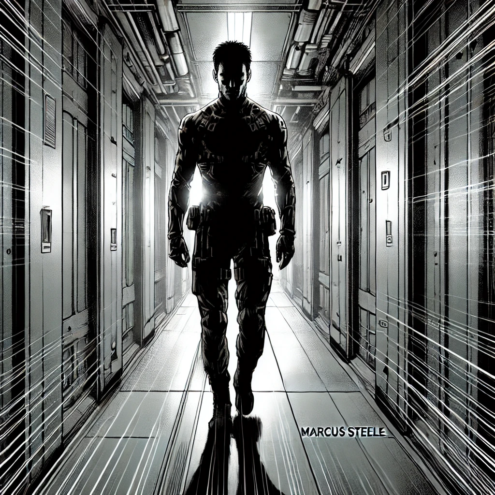

Chapter 2: Training Arc
Marcus Steele's induction into Project Apex was a trial by fire. The training regime pushed every boundary of physical endurance, mental agility, and emotional resilience. Each lesson served as a step deeper into the shadows of his new world.
バキッ
Combat training demanded Marcus adapt to enemies faster than they could react.
Instructor: "Your mind must move as fast as the machine."
Marcus: "Faster."
Interfaces pulsed with quantum data streams, demanding precision under pressure.
The smallest sound could betray him.
Marcus learned the art of silence, becoming invisible even in plain sight.
シーン
Under Master Chen's guidance, Marcus found focus amidst chaos, harnessing his inner stillness.
Harper: "Failure here means death out there. Remember that."
Colonel Harper observed every session, her presence a reminder of the stakes.
Every grueling test, every drop of sweat, every fleeting moment of doubt forged Marcus into Specter 6. By the end of the training arc, he was no longer just a man—he was a ghost.